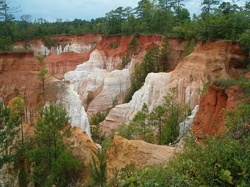

Providence Canyon State Outdoor Recreation Area is a 1,003 acres (4.06 km2; 1.57 sq mi) state park located in Stewart County in southwest Georgia.[1] The park contains Providence Canyon, which is sometimes called Georgia's "Little Grand Canyon". It is considered to be one of the Seven Natural Wonders of Georgia. Providence Canyon actually is not a purely natural feature — the massive gullies (the deepest being 150 feet) were caused by erosion due to poor farming practices in the 19th century.[2] It is also home to the very rare plumleaf azalea.
The Canyon Loop Trail descends from the park’s visitor center (view maps and driving directions), switching back through a shady forest. The trail reaches the canyon floor at .25 mile. The trail walks up a sandy riverbed, turning left to hike into canyons 1-5.
The hike follows stream beds on the canyon floor, a nearly-continuous flow of water and sand between the canyon walls. Grain by grain, sand has flowed away from the canyon’s walls, creating the spectacular rock formations and pinnacles that tower nearly vertically over the trail. Each canyon is unique, carved by water and exposing dramatic, flowing shapes of sandstone carved by continuously moving water.
Information provided for fair use by wikipedia.com and atlantatrails.com